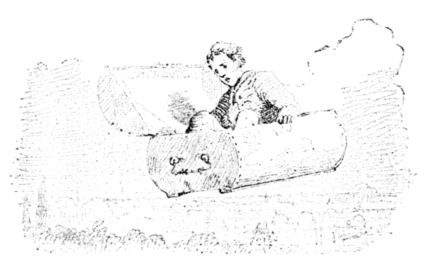
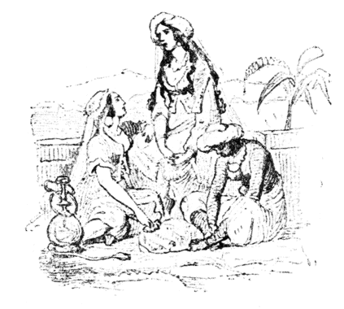

むかし、あるとき、お金持のあきんどがありました。どのくらいお金持だといって、それは町の大通のこらず銀貨で道をこしらえて、そのうえ横町の
そこで、むすこが、のこらずのお金をもらうことになりました。そうしてたのしくくらしました。毎晩、
ところが、これが、とんだとぼけたかばんでした。錠前をおすといっしょに、空のうえにまい上がるのです。ひゅうッ、さっそく、かばんはひこうをはじめました。ふわりふわり、かばんはむすこをのせたまま、煙突の穴をぬけて、雲をつきぬけて、とおくへとおくへとんでいきました。でも、かばんの底が、みしみしいうたんびに、むすこは、はらはらしました。途中でばらばらになって、空のうえからまっさかさまに木の葉落しということになったら、すばらしいどころではありません。やれやれこわいこと、まあこんなふうにして、むすこは、トルコの国までいきました。そこでかばんを、ひとまず、森の落ち葉のなかにかくして、町へけんぶつにでかけました。けっこう、そのままのなりでね。なぜなら、トルコ人なかまでは、みんながこの男とおなじように、どてらのねまきをひきずって、うわぐつをはいていましたもの。ところで、むすこがきょろきょろしながらあるいていきますと、むこうから、どこかのばあやが、こども［＃「こども」は底本では「こど」］をつれてくるのにであいました。
「ねえもし、トルコのばあやさん。」と、むすこはたずねました。「この町のすぐそとにある大きなお城はどういうお城ですね。ずいぶん高い所に、窓がついていますね。」
「あれは、王さまのお姫さまのおすまいです。」と、ばあやがこたえました。「お姫さまは、お生まれになるさっそく、なんでもたいへん運のわるいおむこさんをおむかえになるという、いやなうらないがでたものですから、そのわるいおむこさんのよりつけないように、王さまとお
「いや、ありがとう。」
むすこはこういって、また森へもどっていきました。そうして、すぐかばんのなかにはいると、そのままお城の屋根のうえへとんでいって、お姫さまのおへやの窓からそっとなかにはいりました。
お姫さまは、ソファのうえで休んでいました。それが、いかにもうつくしいので、むすこはついキスしずには、いられませんでした。それで、お姫さまは目をさまして、たいそうびっくりした顔をしました。
でも、むすこは、こわがることはない、わたしは、トルコの神さまで、空をあるいて、わざわざやって来たのだといいますと、お姫さまはうれしそうににっこりしました。
ふたりはならんで腰をかけて、いろんな話をしました。むすこはまず、お姫さまの目のことを話しました。なんでもそれはこのうえなくきれいな黒い水をたたえた、ふたつのみずうみで、うつくしいかんがえが、海の人魚のように、そのなかでおよぎまわっているというのです。それから、こんどはお姫さまの
そう、どれもなかなかおもしろい話でした。そこで、むすこは、お姫さまに、わたしのおよめさんになってくださいといいました、お姫さまは、すぐ「はい。」とこたえました。「でもこんどいらっしゃるのは土曜日にしていただきますわ。」と、お姫さまはいいました。「その晩は王さまとお
「ええ、わたしは、お話のほかには、なんにも、ご婚礼のおくりものをもってこないことにしましょう。」と、むすこはいいました。そうして、ふたりはわかれました。でも、わかれぎわに、お姫さまは剣をひとふり、むすこにくれました。それは金貨でおかざりがしてあって、むすこには、たいへんちょうほうなものでした。
そこで、むすこはまたとんでかえっていって、あたらしいどてらを一枚買いました。それから、森のなかにすわって、お話をかんがえました。土曜日までにつくっておかなければならないのですが、それがどうしてよういなことではありませんでした。
さて、どうにかこうにか、お話ができ上がると、もう土曜日でした、
王さまとお妃さまと、のこらずのお役人たちは、お姫さまのところで、お茶の会をして待っていました。むすこは、そこへ、たいそうていねいにむかえられました。
「お話をしてくださるそうでございますね。」と、お妃さまがおっしゃいました。「どうか、おなじくは、いみのふかい、ためになるお話が伺いとうございます。」
「さようさ。だが、ちょっとはわらえるところがあってもいいな。」と、王さまもおっしゃいました。
「かしこまりました。」と、むすこはこたえて、お話をはじめました。そこで、みなさんもよくきくことにしてください――
『さて、あるとき、マッチの
「わたしのうたう歌は、すこし
「さあ、きみは、あんまりしゃべりすぎるぞ。」と、ほくち箱が、くちをはさみました。そして、火切石にかねをぶつけたので、ぱっと火花がちりました。
「どうだ、おたがいに、おもしろく、ひと晩すごそうじゃないか。」
「うん、このなかで、だれがいちばん身分たかく生まれてきたか、いいっこしようよ。」と、マッチがいいました。
「いいえ、わたくし、じぶんのことをとやかく申したくはございません。」と、石のスープ入がこたえました。「まあ、それよりか、たのしい夕べのあつまりということにいたしてはどうでございましょう。さっそく、わたくしからはじめますよ。わたくしは、じっさい出あったお話をいたしましょう、まあどなたもけいけんなさるようなことですね。そうすると、たれにもよういにそのばあいがそうぞうされて、おもしろかろうとおもうのでございます。さて、東海は、デンマルク領のぶな林で――」［＃「」」は底本では欠落］
「いいだしがすてきだわ。この話、きっとみんなおもしろがるわ。」と、お皿たちがいっせいにさけびました。
「さよう、そこのある、おちついた家庭で、わたくしはわかい時代をおくったものでしたよ。そのうちは、道具などがよくみがかれておりましてね。ゆかはそうじがゆきとどいておりますし、カーテンも、二週間ごとに、かけかえるというふうでございました。」
「あなたは、どうもなかなか話じょうずだ。」と、毛ぼうきがいいました。「いかにも話し手が婦人だということがすぐわかるようで、きいていて、なんとなく上品で、きれいな感じがする。」
「そうだ。そんな感じがするよ。」と、バケツがいって、うれしまぎれに、すこしとび上がりました。それで、ゆかのうえに水がはねました。
で、スープ入は話をつづけましたが、おしまいまで、なかなかおもしろくやってのけました。
お皿なかまは、みんなうれしがって、ちゃらちゃらいいました。ほうきは、砂穴からみどり色をしたオランダぜりをみつけてきて、それをスープ入のうえに、
「さあ、それではおどるわ。」と、火かきがいって、おどりだしました。ふしぎですね、あの火かきがうまく片足でおどるじゃありませんか。すみっこの古椅子のきれがそれをみて、おなかをきってわらいました。
「どう、わたしも、花環がもらえて。」と、火かきがねだりました、そうして、［＃「、」は底本では「。」］そのとおりしてもらいました。
「どうも、どいつもこいつも、くだらない奴らだ。」と、マッチはひとりでかんがえていました。
さて、こんどはお茶わかしが、［＃「、」は底本では「。」］歌をうたう番でした。ところが風をひいているといってことわりました。そうしていずれ、おなかでお茶がにえだしたら、うたえるようになるといいました。けれどこれはわざと気どっていうので、ほんとうは、お茶のテーブルのうえにのって、りっぱなお客さまたちのまえでうたいたかったのです。
窓のところに、一本、ふるい
「お茶わかしさんがうたわないというなら、かってにさせたらいいでしょう、おもての鳥かごには、
すると、湯わかしが、
「どうして、そんなことは大はんたいだ。」と、いいだしました。これは、台所きっての歌うたいで、お茶わかしとは、腹がわりの兄さんでした。「外国鳥の歌をきくなんて、とんでもない。そういうことは愛国的だといえようか、市場がよいのバスケット君にはんだんしておもらい申しましょう。」
ところで、バスケットは、おこった声で、
「ぼくは不愉快でたまらん。」といいました。「心のなかでどのくらい不愉快に感じているか、きみたちにはそうぞうもつかんだろう。ぜんたい、これは晩をすごすてきとうな方法でありましょうか。家のなかをきれいに片づけておくほうが、よっぽど気がきいているのではないですか。諸君は、それぞれじぶんたちの場所にかえったらいいでしょう。その上で、ぼくが、あらためて
「よし、みんなで、さわごうよ。」と、一同がいいました。
そのとき、ふと戸があきました。このうちの女中がはいって来たのです。それでみんな［＃「みんな」は底本では「みん」］はきゅうにおとなしくなって、がたりともさせなくなりました。でも、おなべのなかまには、ひとりだって、おもしろいあそびをしらないものはありませんでしたし、じぶんたちがどんなになにかができて、どんなにえらいか、とおもわないものはありませんでした。そこで、
「もちろん、おれがやるつもりになれば、きっとずいぶんおもしろい晩にしてみせるのだがなあ。」と、おたがいにかんがえていました。
女中は、マッチをつまんで、火をすりました。――おや、しゅッと音がしたとおもうと、ぱっときもちよくもえ上がったではありませんか。
「どうだ、みんなみろよ。やっぱり、おれはいちばんえらいのだ。よく光るなあ。なんというあかるさだ――」と、こうマッチがおもううち、燃えきってしまいました。』
「まあ、おもしろいお話でございましたこと。」と、そのとき、お
「うん、それがいいよ。」と、王さまもおっしゃいました。「それでは、おまえ、むすめは月曜日にもらうことにしたらよかろう。」
まず、こんな［＃「こんな」は底本では「こん」］わけで、おふたりとももう、うちのものになったつもりで、むすこを、おまえとおよびになりました。
これで、いよいよご婚礼ときまりました。そのまえの晩は、町じゅうに、おいわいのイリュミネーションがつきました。ビスケットやケーキが、人民たちのなかにふんだんにまかれるし、町の少年たちは、往来にあつまって、ばんざいをさけんだり、指をくちびるにあてて、口笛をふいたりしました。なにしろ、すばらしいけいきでした。
「そうだ。おれもお礼になにかしてやろう。」と、あきんどのむすこはおもいました。そこで、流星花火だの、
ぽん、ぽん、まあ、花火がなんてよく上がることでしょう。なんて、いせいのいい音を立てることでしょう。
トルコ人は、たれもかれも、そのたんびに、うわぐつを耳のところまでけとばして、とび上がりました。
こんなすばらしい空中
むすこは、かばんにのったまま、また森へおりていきましたが、「よし、おれはこれから町へ出かけて、みんな、おれのことをどういっているか、きいてこよう。」とかんがえました。なるほど、むすこにしてみれば、そうおもい立ったのも、むりはありません。
さて、どんな話をしていたでしょうか。それはてんでんがちがったことをいって、ちがった見方をしていました。けれども、なにしろたいしたことだと、たれもいっていました。
「わたしは、トルコの神さまをおがんだよ。」と、ひとりがいいました。「目が星のように光って、ひげは、海のあわのように白い。」
「神さまは火のマントを着てとんでいらしった。」と、もうひとりがいいました。「それはかわらしい天使のお子が、ひだのあいだからのぞいていた。」
まったくむすこのきいたことはみんなすばらしいことばかりでした。さて、あくる日はいよいよ結婚式の当日でした。そこで、むすこは、ひとまず森にかえって、かばんのなかでひと休みしようとおもいました。――ところがどうしたということでしょう。かばんは、まる焼けになっていました。かばんのなかにのこっていた花火から火がでて、かばんを灰にしてしまったのです。
むすこはとぶことができません。もうおよめさんのところへいくこともできません。
およめさんは、一日、屋根のうえにたって待ちくらしました。たぶん、いまだに待っているでしょう。けれどむすこはあいかわらずお話をしながら、世界じゅうながれあるいていました、でも、マッチのお話のようなおもしろい話はもうつくれませんでした。
